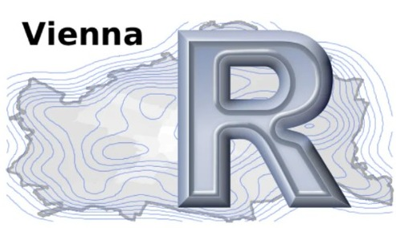

The R Consortium recently spoke with Mario Annau, co-organizer of the Vienna R User Group. During the conversation, he discussed the use of R in the finance and pharmaceutical industries in Vienna. He also shared insights into the latest and upcoming trends in using R in these sectors and tips for organizing successful hybrid meetups with minimal overhead.
In September 2022, Mario Annau talked to the R Consortium about the role of the local financial industry in the Robust Vienna R Community. Recently, the R Consortium reached out to Mario for a detailed discussion about the use of R in the finance and pharmaceutical industries in Vienna. Mario shared his insights regarding the latest and upcoming trends in using R in these sectors and tips for organizing successful hybrid meetups with minimal overhead.

Mario is the Founder and CEO of Quantargo, a platform that provides professional training and consulting in data science focusing specifically on R programming. Before establishing Quantargo, Mario worked in market risk management, proprietary trading, and advanced analytics. He is an active member of the R community, having contributed to various R packages and given conference talks over several years.
Please share about your background and involvement with the RUGS group.
I became interested in R during my university studies in computer science. I earned a bachelor’s degree in software engineering and a master’s in intelligent systems or computational intelligence. During my master’s studies, I began using R. I also found out that Kurt Hornik, was at a different university in Vienna and was also using R. Together with other R core developers, he created R with its package repository and many features. Although I am not a trained statistician, I became more involved in statistics and machine learning, which are closely related. I did my master’s thesis with Kurt Hornik.
During my second thesis, I became increasingly involved with R, which led me to explore text mining and sentiment analysis with this language. This interest ultimately kick-started my career. I am proud to say that I am one of the few people who have truly benefited from using R in my professional life. Back then, using open source software in companies was uncommon, and many people preferred Matlab and other professional tools. People would often ask me who supported R and why it was free. However, I found that having this skill set was very beneficial.
The experience of using open source languages and technologies has been really helpful for me. Over the years, I have switched jobs and worked for different employers, but the knowledge I gained has always been useful in other settings and companies. Unlike bigger corporations, I never had to worry about buying licenses or running into budget issues. For example, Matlab is expensive, so it’s always a concern for some companies. But since I’ve had experience with open source technologies, I never had to deal with those issues.
I learned about open source technologies during my university studies and discovered that they are free to use even in my professional career. This has been very helpful to me, and I am amazed at how far I have been able to go with it. Although R is not as widely used in the professional field as other languages, it has served me very well, and I am happy to be able to use it in my career. The Vienna R User Group allows me to bring it to the local R community.
Can you share what the R community is like in Vienna?

It’s evident that the industry has started accepting open source, including R. I work primarily in the financial sector and pharma, which are industries where R is widely used. R is also a strong contender, alongside Python, in these fields.
The acceptance of using R in production environments is increasing, but some companies still view it as just a tool for creating graphs and nothing else. Despite this perception, I still use R a lot in production, and it works well. However, some wrong assumptions about using R in production are still present, which makes it challenging to deploy. Since R is a dynamic language and not compiled, some issues need to be addressed. Python also faces similar issues but is seen as easier to use. Although it is possible to use R in production, it depends on the department, as IT departments tend to be less accepting of R compared to the statistics or math departments.
There are always discussions regarding the best programming language to use in various industries. However, with the emergence of cloud technology and containerization, it is possible to package everything up into a nice container, making it work well. R is an industry-standard, and many risk departments in the financial industry use it to develop core models. Although people may complain and want to learn other languages like Python, R is still widely used.
What industry are you currently in? How do you use R in your work?
We apply our expertise to various industries, including finance and pharmaceuticals. As external consultants, we assist clients in setting up proper procedures and creating useful dashboards and applications. We often work with existing R codes or other resources to improve their functionality and create helpful add-ons. Our focus is on maximizing existing knowledge and leveraging the existing code base. Our services often involve package creation, documentation, containerization, and dashboard framework development. We tailor our approach to suit the unique needs of each project.
Nowadays, we are developing more and more frameworks to set up departments in the industry with the right infrastructure. This includes developing R packages and connecting everything with the rest of the organization. Initially, we started by creating small models and calculations, but it gradually became more significant, and now we are mostly helping entire departments set themselves up in the right way and make the most of R and their people.
What trends do you currently see in R language and your industry? Any trends you see developing in the near future?
The trend of containerization has been around for some time now, where you package your app or REST API dashboard in a Docker container and deploy it in an environment such as the cloud. This trend is prevalent in both R and Python. As for upcoming trends, I am excited about the web assembly initiative, which makes it possible to run a Shiny app within a browser without a server. This initiative has great potential and can bring R to people who are unaware of its existence. It is exciting to see R bring data and statistics to life in various applications. I hope that this initiative can go further and reach more people.
Regarding the deployment of our Shiny projects, it is always surprising to see how complicated it can be depending on the environment. This tool aims to make the deployment process easier and accessible to a broader audience. Currently, the loading times are still too long, but these issues can be optimized with some improvements.
I have noticed another trend in certain industries, which is the increasing demand for regulatory compliance. For example, the FDA regulates the pharmaceutical industry, while finance has its own regulatory authorities. This trend encompasses ensuring that packages and codes are properly regulated and reviewed. I am seeing this trend in both the finance and pharmaceutical industries.
Any techniques you recommend using for planning for or during the event? (Github, zoom, other) Can these techniques be used to make your group more inclusive to people that are unable to attend physical events in the future?
We have a GitHub page and a Meetup page, which is our setup. We tried to ensure that everything we present is also available, such as code and slides on GitHub, so that it’s easy for everyone to access. However, finding speakers and rooms is always a challenge. The good news is that finding rooms is getting easier than finding speakers. Some companies are always willing to host an hour-long meetup and have some online meetings. We are a group of smart people who like to talk about interesting things.
The most challenging aspect is locating speakers, particularly female speakers. I am pleased that initiatives like R Ladies provide a dedicated space for women in this field. Generally, finding speakers is a difficult task for us, and we rely heavily on referrals from friends and acquaintances. However, as a community, we always work to overcome this obstacle.
It’s important to always have a stream of topics and speakers available for events, but this can be difficult, especially when finding female speakers. Creating a welcoming and safe community where everyone feels comfortable sharing their knowledge is essential. Organizing these events is worth the effort, as you get to meet many like-minded people in your industry, and it can help you professionally. You’ll learn a lot and get to know people in your field, which is always an advantage. So, if you’re thinking of organizing meetups, just do it, and you’ll see how far it can take you.
Before COVID, our meetings were always in person. We tried recording them, but it didn’t work out. During COVID, we had to switch to online meetings only, and afterward, we started having hybrid meetings. I don’t find online meetups very satisfying because you miss out on the networking and socializing aspects. Going out to a bar or a pub and talking with people is an important part of the experience for me. That’s why I still prefer in-person meetups. However, thanks to COVID, things have changed, and I think we can now find more ways to combine the benefits of in-person and online meetings.
You are creating a lot of content that some people miss due to various reasons. There may be people who wanted to attend but couldn’t due to certain difficulties. To address this issue, we have now set up hybrid meetings, which require more equipment, like microphones and cameras. Most of the time, I have to carry this equipment. However, it makes sense to have this kind of content and share it with your community. Sometimes, speakers may not be happy about it, but it’s rare. Most of the time, it makes sense to do it hybrid.
As for the hybrid, I can say that recording can be difficult, and it rarely works out perfectly the first time around. However, I would recommend setting up a system that reduces your overhead for platforms like YouTube Live. Strive for minimal overhead to make your life easier. Don’t make the mistake we did once when Hadley Wickham was in town and we had to do a lot of editing and cutting because the recording wasn’t perfect. Instead, aim for a setup that works seamlessly and consider doing live streams instead.
The most practical way to share content with YouTube is to stream it live. This automatically uploads the content online, eliminating the need for further actions. As a result, when users visit the platform, the content is readily available for viewing.
I have realized that delaying uploading our content to perform tasks such as editing and rearrangement is a time-consuming process that does not offer significant benefits. Therefore, we are working towards improving our setup by acquiring high-quality microphones and mobile cameras to make the process more efficient and provide our viewers with a seamless experience.
I am often amazed by the gratitude expressed by individuals around the world who get the opportunity to participate. Without the necessary infrastructure, achieving this would be impossible. However, some members of my community believe that it requires an excessive amount of work.
In light of the current global situation, people are less likely to travel or move to different cities for work or other purposes. Therefore, hybrid events are the most suitable way to improve accessibility and encourage community participation. Event organizers should consider using hybrid formats to provide a more inclusive and efficient experience for all participants.
How do I Join?
R Consortium’s R User Group and Small Conference Support Program (RUGS) provides grants to help R groups organize, share information, and support each other worldwide. We have given grants over the past four years, encompassing over 68,000 members in 33 countries. We would like to include you! Cash grants and meetup.com accounts are awarded based on the intended use of the funds and the amount of money available to distribute.